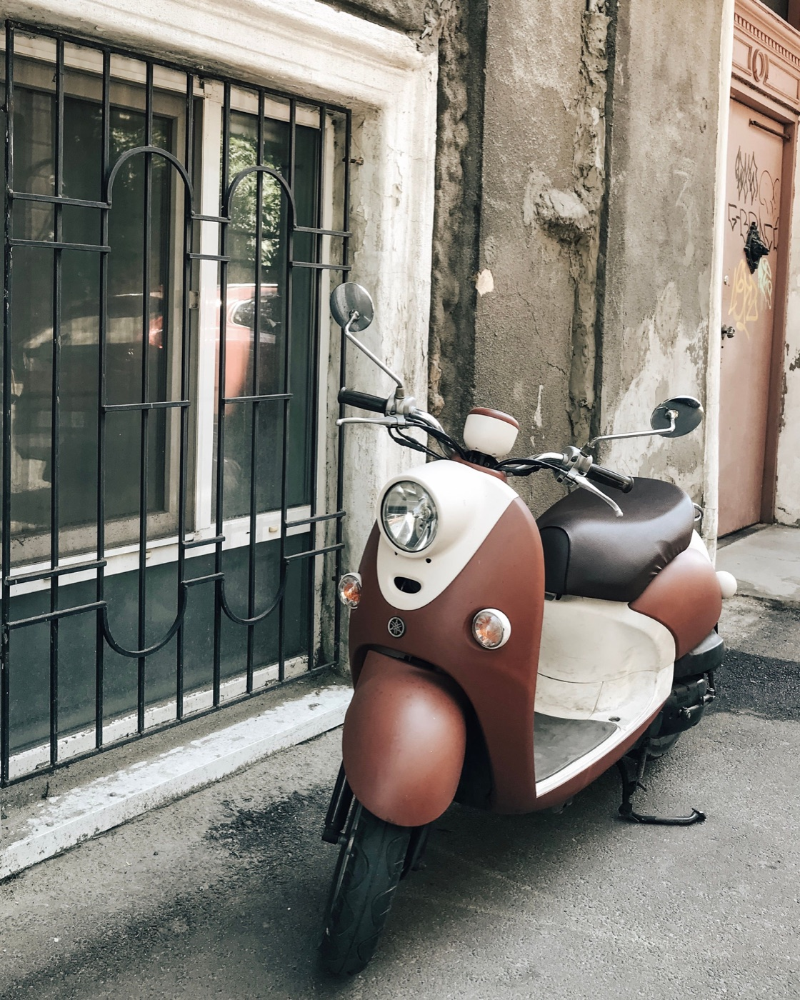
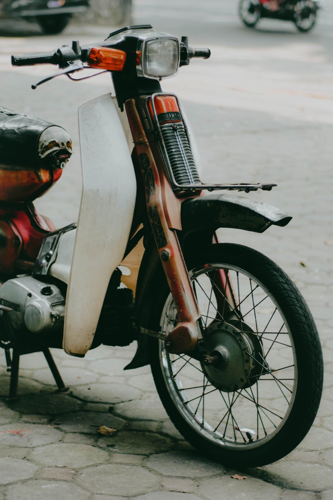

Как настроить зеркала и посадку на байке

Неправильно выставленные зеркала заставляют постоянно поворачивать голову, а напряжённая посадка ухудшает точность управления. Настройка занимает несколько минут и особенно важна перед первой поездкой на незнакомом скутере.
Сначала сядь как будешь ехать
Поставь байк устойчиво, сядь по центру сиденья и положи руки на руль без напряжения. Спина остаётся естественной, локти слегка согнуты, плечи опущены. Не нужно наваливаться на руль: вес тела держит сиденье, а кисти только управляют газом и тормозами.
Что должно быть видно в зеркалах
Внутренний край каждого зеркала может захватывать небольшую часть плеча или руки, но основная площадь должна показывать соседнюю полосу и дорогу позади. Левое и правое зеркала не обязаны давать одинаковую картинку: вместе они должны расширять обзор, а не дважды показывать центр дороги.
- Настраивай зеркала сидя в обычной позе, а не стоя рядом.
- Выставь горизонт примерно посередине зеркала.
- Смести каждое зеркало наружу до минимального изображения собственного плеча.
- Затяни крепление и снова проверь положение после короткой поездки.

Слепая зона всё равно остаётся
Даже широкие зеркала не показывают всё пространство сбоку. Перед перестроением сначала оцени зеркало, затем быстро поверни голову в сторону манёвра. Этот контроль должен быть коротким: не задерживай взгляд назад и продолжай видеть движение впереди.
Положение ног и кистей
Стопы полностью стоят на площадке или подножках и не свисают наружу. Колени не мешают повороту руля. Кисть на газе остаётся почти прямой: сильный изгиб быстро утомляет и может привести к случайному добавлению газа на кочке. До старта убедись, что обе тормозные ручки доступны без изменения хвата.
Признаки плохой настройки
- в зеркале видно в основном собственные плечи;
- для обзора назад приходится наклонять корпус;
- после десяти минут болят кисти или плечи;
- руль нельзя повернуть полностью, не задевая колени;
- одно зеркало дрожит или постепенно опускается.
Если зеркало не держится, ручка люфтит или посадка объективно тесная, одной регулировкой проблему не решить — крепление нужно исправить, а размер байка лучше пересмотреть.
Короткий вывод
Хорошая посадка даёт расслабленные руки, свободный поворот руля и уверенный доступ к тормозам. Зеркала показывают дорогу и соседние полосы, но перед манёвром всё равно нужна проверка слепой зоны. Дополнительно прочитай, как безопасно пользоваться навигатором и как тормозить на байке.